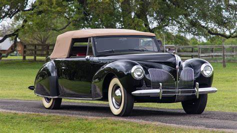
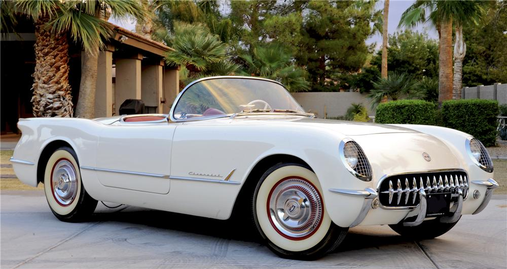
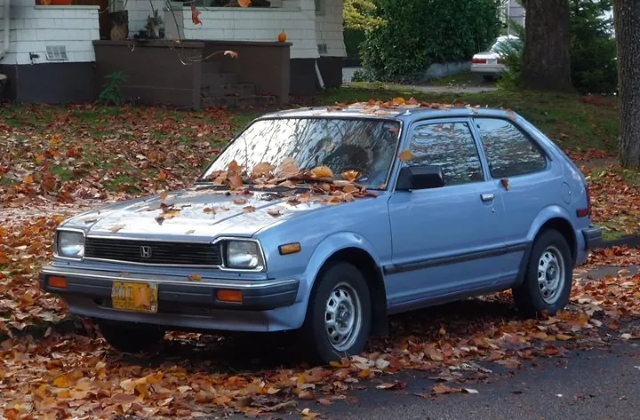

Autos
.jpeg)
Decada 1930
El Bugatti Type 57, lanzado en 1934, se caracterizaba por su elegante
diseño y su desempeño sobresaliente. Con su motor de 3.3 litros
y su chasis innovador este auto se convirtió en un símbolo de lujo y
sofisticación.
Decada 1940
Uno de los autos más emblemáticos de la década de 1940 fue el Lincoln
Continental, conocido por su diseño elegante y su presencia imponente en
las carreteras.
Este vehículo de lujo se destacó por su parrilla distintiva y sus líneas
elegantes, convirtiéndose en el epitome del estilo de la posguerra.


Decada 1950
En el ámbito de los automóviles deportivos, el Chevrolet Corvette de
1953 marcó un hito en la historia del automóvil. Con su diseño
aerodinámico y su potente motor V8, el Corvette se convirtió en un icono
del estilo y la velocidad, sentando las bases para las generaciones
futuras de autos deportivos de alto rendimiento.
Decada 1960
El Ford Mustang revolucionó el mercado automotriz con su diseño
deportivo y accesible. Con un motor V8 potente y un precio asequible,
se convirtió en un ícono cultural y en el símbolo de los "pony cars". Su
popularidad perdura hasta hoy con varias generaciones y ediciones
especiales.
.jpeg)
.jpeg)
Decada 1970
Este modelo de Porsche es considerado uno de los mejores autos
deportivos de todos los tiempos. Su motor de 2.7 litros y su diseño
aerodinámico
lo convirtieron en una máquina de alto rendimiento tanto en la carretera
como en las pistas de carreras.
Década de 1980
Honda Civic (1980): El Civic consolidó la reputación de Honda como
fabricante de autos fiables y eficientes. Este coche compacto se destacó
por su economía de combustible y su durabilidad,
convirtiéndose en un favorito entre los conductores urbanos.


Decada 1990
El Toyota Supra MK4, producido entre 1993 y 2002, es un icónico
deportivo japonés conocido por su motor 2JZ-GTE de 3.0 litros y seis
cilindros en línea, capaz de generar hasta 320 caballos de fuerza.
Su diseño y rendimiento lo han convertido en un clásico muy apreciado1.
Decada 2010
BMW i3 (2013): Con su diseño futurista y su enfoque en la sostenibilidad,
el i3 utilizaba materiales reciclados y ofrecía una experiencia de
conducción totalmente eléctrica, centrada en el entorno urbano.